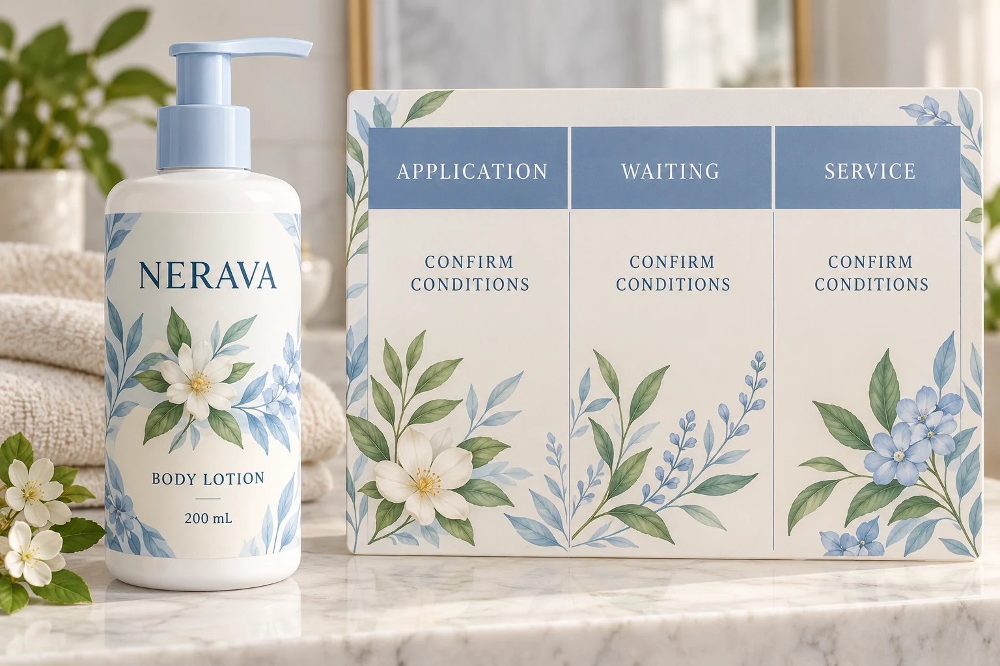

Start at the bottle when the label is applied
Consider a hypothetical lotion project. Bottles have arrived from a cooler storage area, while the labeling room feels comfortable. Recording only the room setting misses the condition of the surface that will actually receive the adhesive.
Ask the filling operator to describe where the bottles come from, how they are prepared and what happens before labeling. Identify the container material and any coating or surface treatment. Record whether moisture or residue is present rather than assuming that a dry-looking sample represents the complete production situation.
These observations are inputs for construction selection and process review. They do not establish that one particular adhesive will work. An unconfirmed surface condition belongs in the open-questions column, with someone responsible for resolving it.
Read the two temperature terms separately
An Avery Dennison product data sheet distinguishes minimum application temperature from the service-temperature range after bonding. Its piggyback-paper construction is an illustration of terminology, not a recommendation for a cosmetic bottle.
Read the applicable sheet for the actual proposed construction. Ask which conditions its application instruction covers and when its stated service limits become relevant. Do not copy values from another adhesive, another laminate or an unrelated product family because the face material has a familiar name.
The useful purchasing question is specific: which construction reference and instruction support the stage we are about to run? A generic claim such as temperature resistant cannot answer that question on its own.
Give the waiting stage an owner
The process does not jump directly from an applied label to every imaginable use condition. Ask the supplier whether the proposed construction requires particular conditions or waiting before the next handling or exposure step. Obtain the instruction for this job; this guide sets no universal waiting period.
Then ask the operator whether the actual route can follow it. Will labeled bottles immediately move elsewhere? Will they be packed, handled or exposed to product? Record the proposed sequence and the point at which another team takes responsibility.
If the instructions are unclear, obtain clarification before authorizing the disputed step. Do not turn an unanswered question into an arbitrary overnight wait and describe that as a validated process.
Use a stage record instead of one broad range
Complete this worksheet with the supplier and the site that will apply the labels. Use the actual construction reference rather than a material-family nickname.
| Stage | Record for this project | Decision before proceeding |
|---|---|---|
| Before application | Bottle identity, prior location, preparation and observed surface | Does the operator have the agreed preparation route? |
| Application | Surface and surrounding conditions, method, construction instruction | Has the supplier addressed these actual conditions? |
| Waiting | Required conditions and next planned operation | Can the site follow the construction-specific instruction? |
| Later service | Expected storage, transport, handling and product exposure | Is the proposed use inside the agreed scope? |
| Evidence gap | Unconfirmed condition, owner and requested information | Which decision remains on hold? |
| Release | Matched construction, process reference and responsible approval | What exactly has been accepted, and what has not? |
Work down the rows in sequence. Where the actual conditions differ from the supplier's stated assumptions, ask whether the process must change or another construction should be evaluated. Keep the reply attached to the same material reference. A revised adhesive description should not inherit an earlier approval without review.

Two projects can need different next actions
In one hypothetical project, the site can bring bottles into a confirmed preparation environment and follow the supplier's specified application and waiting route. That may make a process adjustment the sensible first option. There is no reason to demand a more elaborate construction before checking whether the existing proposal meets the real sequence.
In another project, the filling arrangement cannot follow those instructions. Asking the supplier to assess an alternative construction or route is more useful than insisting that a broad service range proves suitability. Any alternative still needs review against the actual bottle and exposure.
Neither situation supports a promise that the labels will survive every bathroom, warehouse or transport event. Temperature is one part of a construction's suitability, alongside the substrate, application method and relevant contact conditions.
Keep this distinction in the sample plan
Use the adhesive sample-plan guide to connect the chosen construction to representative bottles and agreed observations. The stage record here defines what must be represented; it does not replace that physical review or specify a universal test method.
Our storage-before-application guide addresses unused label stock. That is a separate condition from applying labels to bottles or using the finished pack. A suitable storage arrangement cannot be used as evidence that a disputed application condition is acceptable.
For custom cosmetic bottle labels, send the bottle details, label dimensions, quantities by design and the proposed application-to-use sequence. Identify the uncertain stage and include the relevant material sheet reference. Use the inquiry form to prepare a message; send supporting files by email or WhatsApp because the form does not upload attachments. Ask for clarification of the missing condition before treating the whole temperature question as settled.